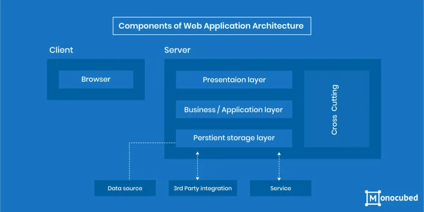
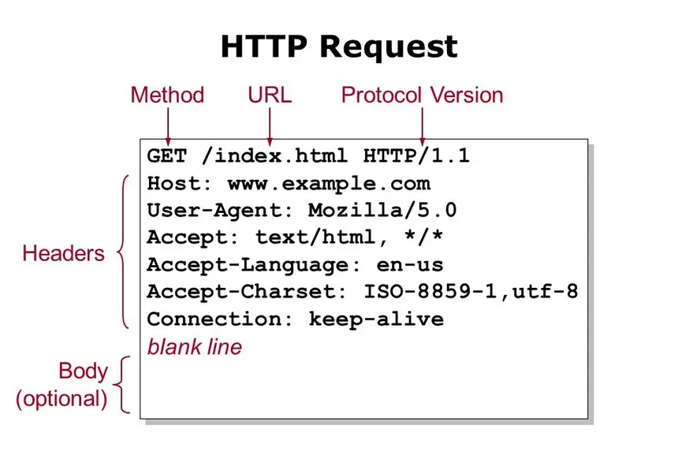
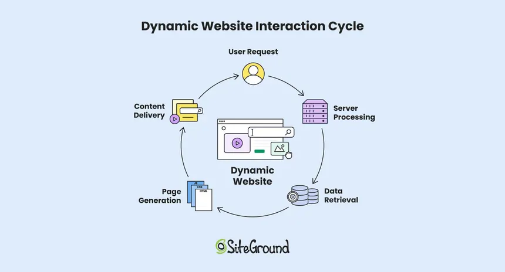

The client-server model is a fundamental distributed application structure in web technology where tasks are partitioned between service requesters, known as clients, and service providers, known as servers.
Clients, such as web browsers (e.g., Chrome, Firefox, Safari) or email applications, initiate communication by sending requests for data or services to servers.
Servers, which are typically powerful computers or systems located remotely, listen for these incoming requests, process them, and return the requested data or service.
This interaction follows a request-response messaging pattern, where the client sends a request and the server returns a response.
COMPONENTS OF WEB APPLICATION

Web application architecture is a structural framework that defines the interaction between various components, ensuring the application functions efficiently, securely, and scalably.
The core components are typically divided into user interface (UI) components and structural components
The user interface components are responsible for the visual and interactive elements that users see and engage with, such as dashboards, widgets, settings, notifications, and forms.
These are primarily built using HTML for structure, CSS for styling, and JavaScript for interactivity.
This layer, also known as the presentation layer, is the client-side or front-end of the application.
TYPES OF WEB CONTENT
Tencompasses a wide variety of formats and types, broadly categorized by their purpose, interactivity, and structure. It includes text, images, video, audio, and interactive elements, serving functions ranging from information dissemination and entertainment to driving sales and user engagement. Content can be static, remaining unchanged for all users, or dynamic, adapting based on user preferences or real-time data.
Text Content: The most common type, text is easily adaptable and used for formal, professional, or casual communication. It includes blog posts, articles, product descriptions, and web copy designed to inform, educate, or persuade.
Visual Content: This includes images, videos, and graphics that provide visual context, enhance understanding, and increase engagement. Examples are product photos, promotional videos, and infographics.
Interactive Content: Content that requires user input, such as quizzes, calculators, surveys, and interactive guides, which are designed to engage users and collect data.
Dynamic Content: Content that changes based on user actions, preferences, or real-time data, such as user account information, live stock prices, weather forecasts, and personalized recommendations.
Static Content: Fixed content that remains the same for all users, like basic informational pages, style sheets (CSS), and downloadable documents, which are easier to cache and load quickly.
Multimedia Content: A combination of text, images, audio, and video used on marketing pages, product pages, and blogs to create a richer user experience.
E-commerce Specific Content: Includes detailed product descriptions, customer reviews, user-generated content, and blog articles tailored to guide shoppers through the buying journey.
Structured Content Ty
Web content is the text, visual or audio content that is made available online and user encountered as part of the online usage and experience on websites. It may include text, images, … Wikipedia
HTTP-HTTP REQUEST

An HTTP request is a message sent by a client, such as a web browser, to a server to request a specific resource or to perform an action.
It functions as part of the client-server model, where the client initiates the request and the server responds with the requested data or a status code.
The request consists of three main components: a request line, headers, and an optional message body.
The request line begins with an HTTP method (verb), followed by the request-target (which can be a URI or URL), and the protocol version, all separated by spaces and ending with a carriage return and line feed (CRLF).
The HTTP method identifies the action to be performed on the resource and is case-sensitive, typically written in uppercase.
The most common methods include GET, POST, PUT, DELETE, HEAD, PATCH, OPTIONS, TRACE, and CONNECT.
DYNAMIC WEBPAGE

A dynamic web page is a web page that assembles its content in real-time when a visitor requests it, typically to deliver personalized or frequently updated information based on the user, their actions, or other contextual factors like time or location.
This contrasts with static web pages, which display the same fixed content for every visitor and are pre-built.
Dynamic pages can be generated using server-side scripting (e.g., PHP, Python) that processes data from databases or user inputs before sending the page to the browser, or client-side scripting (e.g., JavaScript) that modifies the page's content and behavior after it has loaded in the user's browser.
The result is a more interactive and personalized experience, such as customized welcome messages, live inventory updates, or dynamic content based on user interactions.
APPLICATION SERVERS
the server's only responsibly is running PHP + nginx/Apache and serving requests, it's a web server. Full stop. An application server is just a catch all term. If you're running a conglomerate of services, if it's not a butter bot (has exactly one specific purpose),
if any one specific term can't apply (mail server, web server, git server), it's an application server. Question 2: Front-/back-end is not as clear. Front end is always what the end user sees and uses Back-end really depends on who you talk to, and the context of the application. Sometimes it refers to the server-side language being used, and other times it refers to an API, which technically has a "front-end" (it renders output), which mediates the requests from the true back-end server to the true front-end Question 3: Meh. I don't think I could really give that answer. That seems to be a bit of a self-reflection kinda question IT is odd, and everyone knows everything. Best I can say is just try your best to